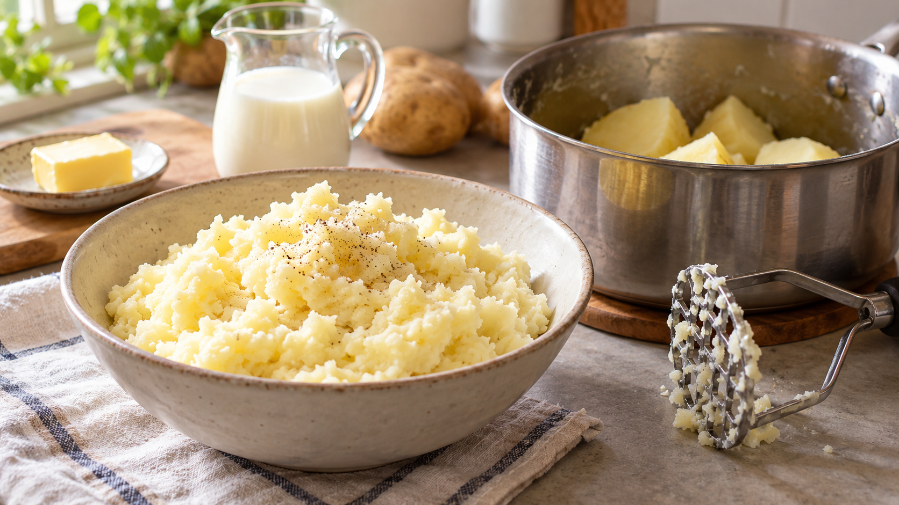

マッシュポテトは練りすぎない｜細胞の外へ出るでんぷんと粘り
なめらかにしようと何度も混ぜたら、マッシュポテトがのびるように重くなった。じゃがいもは同じなのに、なぜ食感が変わるのだろう。
結論は、柔らかくゆでて水を切り、手でつぶしたら、牛乳とバターを軽く合わせて止めること。勢いよく長く練るほど粘りが出やすい。ただし、品種や水分でも食感は変わる。
粒をほぐすと、ふんわりしやすい
じゃがいもの中には、小さな部屋のような細胞が集まり、その中にでんぷんが入っている。加熱で柔らかくなった細胞をほどよく離せば、ほぐれた食感になる。さらに強くこすり続けると、細胞が傷み、でんぷんが外の水分に出やすくなる。水を含んだでんぷんが細胞同士をつなぐと、ペーストのような粘りが生まれる。マッシュポテトの構造を調べた研究も、つぶす工程で細胞が傷み、外側のでんぷんが増えると報告している。
「なめらかにする」と「練り続ける」は同じではない。大きな塊をなくしたら、混ぜる回数を増やすより、温めた牛乳で硬さを調整するほうがよい。
研究で確かめられたこと
じゃがいものマッシュを分析した研究では、細胞の外に出たでんぷんの状態と、マッシュの粘りに関係が見られた。別の調製方法を比べた研究でも、でんぷんの傷み方が食感を左右すると示された。つまり、粘りは単に「水分が多いから」だけでは説明できない。
ただし、研究は食品の構造や機械で測る食感を調べたものだ。家庭の鍋で「何回混ぜると失敗する」と決めたわけではない。そこで家庭では、イリノイ大学の調理案内が勧めるように、ミキサーで強く回さず、手でつぶす方法を選ぶ。
今日作る、軽いマッシュポテト
2〜3人分として、じゃがいも500g、牛乳80mL、バター20g、塩2gを用意する。牛乳は最初から全部入れず、じゃがいもの硬さを見て調整する。
- じゃがいもを洗い、皮をむいて2〜3cmほどに切る。鍋に入れ、かぶる程度の冷水を注ぐ。
- 沸いたら弱めの火で15〜20分ほど煮る。時間は目安にして、フォークが抵抗なく刺さったら湯を切る。
- 鍋へ戻し、弱火で軽く揺すって余分な水分を飛ばす。焦がさないよう火を止め、熱いうちにマッシャーかフォークで塊をつぶす。
- バターを加えて軽く混ぜ、温めた牛乳を少しずつ加える。好みの硬さになったら塩を合わせ、練り続けずに盛り付ける。
湯切りと短い加熱は、余分な水分を減らすため。メイン大学のレシピも、湯切り後に水分を飛ばし、温めた牛乳を加える手順を示している。
別の料理でも「どこまでつぶすか」を決める
ポテトサラダなら、具を加える前にじゃがいもを粗くつぶし、調味料を入れた後は軽く合わせる。これは同じ細胞とでんぷんの考え方からの家庭向けの応用で、サラダの食感を直接確かめた研究結果ではない。まずは仕上がりを「粒を残すか、均一にするか」で決め、目的を超えて練らないようにしよう。
まとめ
マッシュポテトは、柔らかく煮てから手でほぐし、温かい牛乳を合わせたら止める。なめらかさが欲しいときこそ、混ぜる力と回数を増やしすぎない。